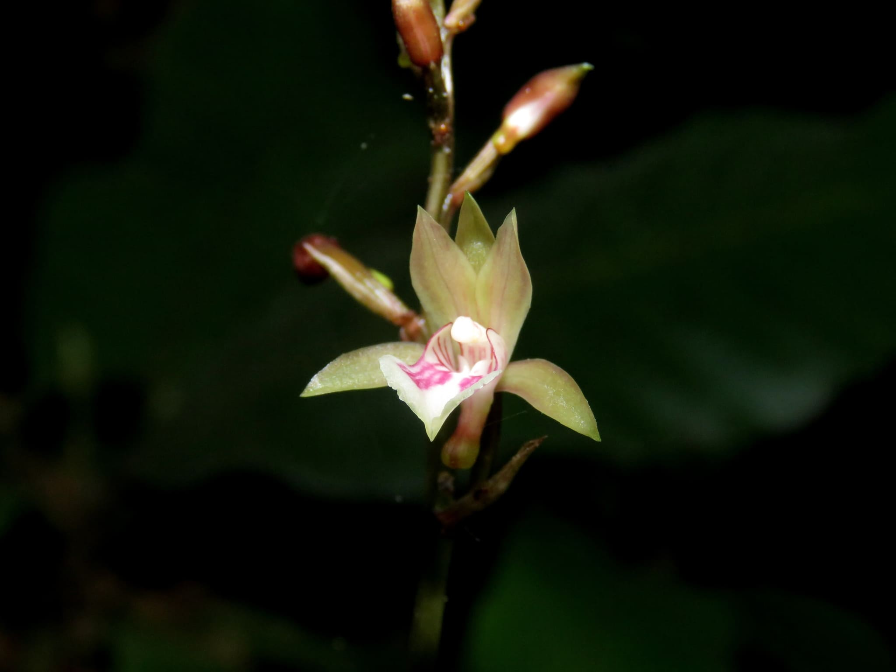

DISEÑO DE UN PLAN DE MONITOREO Y CONTROL DE 5 ESPECIES EXÓTICAS INVASORAS (EEI) EN LA RESERVA DE LA BIÓSFERA LOS TUXTLAS
El Plan de Monitoreo tiene como objetivo conocer la situación de las especies exóticas invasoras en la Reserva de la Biósfera Los Tuxtlas y establecer un Plan de Monitoreo y Control de las cinco especies exóticas más invasivas. El plan de monitoreo y control deberá incluir la conformación de dos brigadas de monitoreo, una para la zona Norte y otra para la zona Sur de la Reserva.
A continuación se presentan los 5 estudios realizados a las especies exóticas invasoras de la zona de Los Tuxtlas:
PLAN DE MONITOREO Y CONTROL DE LA ORQUÍDEA AFRICANA EN LA RESERVA DE LA BIÓSFERA LOS TUXTLAS.
La orquídea africana se encuentra en la mayoría de las veredas y caminos que se abren en la selva alta perennifolia, bosque mesófilo de montaña, encinares tropicales de la Reserva de la Biósfera Los Tuxtlas, así como en carreteras.
Ver PDFPlan de monitoreo y control de la mariposita blanca (Hedychium coronarium) en la Reserva de la Biósfera Los Tuxtlas
La mariposita blanca se observa en la zona núcleo y las faldas del volcán San Martín Tuxtla, en la zona de amortiguamiento, en la orilla del lago de Catemaco,así como en los ríos y arroyos de la parte norte de la Reserva de la Biósfera Los Tuxtlas.
Ver PDFPlan de monitoreo y control del muérdago (Struthanthu ssp. y Psittacanthus calyculatus)en la Reserva de la Biósfera Los Tuxtlas
El muérdago puede observarse en los sistemas de manglar de los ríos Huazuntlán y Temoloapan, en la Laguna del Ostión, que es una zona de influencia de la Reserva de la Biósfera Los Tuxtlas.
Ver PDFPlan de monitoreo y control de los pastos forrajeros en la Reserva de la Biósfera Los Tuxtlas
Los pastos forrajeros ocupan más de la mitad de laRBLTy muchos de ellos se encuentran en predios privados.
Ver PDFPlan de monitoreo y control el pez diablo (Pterygoplichthys spp.) en la Reserva de la Biósfera Los Tuxtlas
El pez diablo se encuentra distribuido en las áreas de influencia de la RBLT, específicamente en la Laguna Salada que conecta a través del río Huazuntlán con la Laguna del Ostión.
Ver PDF